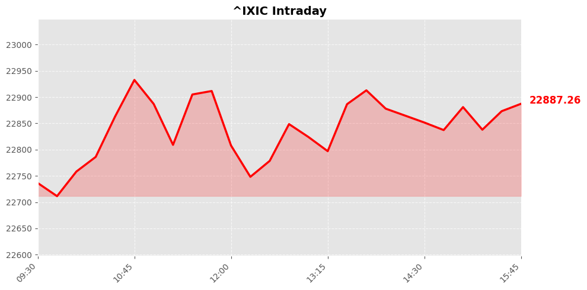

Daily Market Briefing
Market Overview



Market Analysis
The recent trading session reflects a broadly positive sentiment across major U.S. equity indices, with all three benchmarks closing higher. The NASDAQ Composite led the gains, increasing by approximately 0.9%, which suggests strong momentum in technology and growth-oriented sectors. The Dow Jones Industrial Average and S&P 500 also posted solid gains of 0.47% and 0.69%, respectively, indicating broad-based investor confidence across various sectors.
Several factors appear to be driving this upward trend. First, there may be renewed optimism surrounding economic fundamentals, possibly fueled by positive corporate earnings reports or easing concerns about inflation and interest rate hikes. The gains in technology stocks, a significant component of the NASDAQ, could also reflect investor expectations of continued innovation and growth in the sector.
Market sentiment seems cautiously optimistic, with investors likely balancing hopes for economic growth against ongoing geopolitical and macroeconomic uncertainties. The steady upward movement across indices suggests that investors remain confident in the resilience of the U.S. economy, despite potential headwinds such as inflationary pressures or global geopolitical tensions.
Overall, the session underscores a positive market environment, with investors showing appetite for risk and growth assets. While the gains are encouraging, it remains prudent to monitor macroeconomic indicators and corporate earnings reports for signs of sustainability or potential reversals. The broad-based nature of the rally hints at underlying confidence, but vigilance is advised given the inherent volatility and external uncertainties that could influence future market trajectories.
Today's Headlines
News Analysis
Certainly! Here's a professional yet accessible analysis based on today's financial news:
Main Market Focus Points Today:
-
Gold’s Diminishing Safe-Haven Appeal
After a multi-year bull run, gold’s recent price movements suggest it may be losing its status as a reliable safe-haven asset. This shift could signal changing investor sentiment, possibly driven by a resilient economic outlook or evolving inflation expectations. -
Earnings Reports from Tech Giants
Key players like Nvidia and Salesforce are set to release earnings, with a particular focus on AI and software sectors. Their results could serve as bellwethers for the broader technology and innovation-driven markets, especially as AI continues to be a dominant theme. -
Market Concerns Over Private Credit and Asset Managers
Recent declines in asset-management stocks, particularly related to fears surrounding private credit funds (notably Blue Owl Capital), highlight increasing investor anxiety about credit risks and liquidity issues in alternative investment segments. -
Retail Sector Dynamics and Tariff Uncertainty
Retailers such as Home Depot and TJX are reporting earnings amidst ongoing tariff uncertainties, despite the Supreme Court’s ruling that largely invalidated Trump-era tariffs. This ongoing ambiguity could influence supply chain costs and profit margins. -
Potential Market Volatility from External Factors
The anticipation of severe winter storms leading to waived airline fees and the broader macroeconomic environment suggest possible near-term volatility, especially in travel and leisure sectors.
Potential Market Impact Factors:
-
Shift in Gold’s Role
The loss of gold’s safe-haven status might reduce its traditional counter-cyclicality, potentially impacting portfolios relying on gold for risk diversification. Investors may seek alternative hedges or increase allocations in equities or other commodities. -
Earnings from AI and Software Firms
Nvidia and Salesforce’s upcoming reports will be scrutinized for signs of growth sustainability in AI and cloud software. Strong results could boost investor confidence in these high-growth segments, whereas misses may trigger tech sector corrections. -
Credit Market Sentiment
Fears about private credit funds, especially in asset management, could tighten liquidity and raise borrowing costs, impacting leveraged companies and sectors sensitive to credit availability. -
Retail and Tariff Uncertainty
Although tariffs have been largely rolled back, lingering uncertainties may affect consumer spending and supply chain costs, influencing retail earnings and stock performance. -
Weather-Related Disruptions
The forecasted winter storms and airline fee waivers could lead to short-term disruptions in travel-related stocks, with potential ripple effects across hospitality, transportation, and logistics sectors.
Industry Trends Worth Noting:
-
Evolving Safe-Haven Asset Dynamics
The traditional role of gold as a safe haven is being questioned, with investors possibly shifting towards equities or alternative assets, especially if inflation remains under control and economic growth persists. -
AI and Software Sector Resilience
The prominence of Nvidia and Salesforce earnings highlights ongoing investor confidence in AI and cloud computing industries. These sectors are increasingly becoming core components of growth portfolios. -
Private Credit and Alternative Investments
Rising concerns about private credit funds suggest a potential reevaluation of risk in alternative asset classes, which could lead to more cautious investment strategies and increased scrutiny of fund management practices. -
Retail Sector Adaptation
Despite tariff uncertainties, retailers continue to adapt to macroeconomic challenges, with inventory management, pricing strategies, and supply chain resilience becoming critical areas of focus. -
Nostalgia and Consumer Trends
Interestingly, consumer preferences for nostalgic products, like vintage landline phones, indicate a broader trend toward simplicity and authenticity—a niche market with healthy growth potential amid digital fatigue.
In summary, today’s market is characterized by shifting perceptions around traditional safe assets, anticipation of key earnings, and ongoing macroeconomic and geopolitical uncertainties. Investors should remain attentive to sector-specific developments and macroeconomic signals to navigate potential volatility effectively.
Economic Indicators
Inflation Indicators
Employment Indicators
Consumer Indicators
Community Hot Stocks
| Rank | Symbol | Mentions | Source |
|---|---|---|---|
| 1 | DOW | 73 | |
| 2 | CARE | 40 | |
| 3 | NVDA | 28 | |
| 4 | HIT | 25 | |
| 5 | RENT | 24 | |
| 6 | MIND | 24 | |
| 7 | KIDS | 19 | |
| 8 | VS | 18 | |
| 9 | ADD | 18 | |
| 10 | EAT | 16 | |
| 11 | BROS | 16 | |
| 12 | SAFE | 16 | |
| 13 | FACT | 16 | |
| 14 | APPS | 15 | |
| 15 | LUCK | 15 | |
| 16 | TALK | 14 | |
| 17 | PUMP | 14 | |
| 18 | ASTS | 14 | |
| 19 | SKY | 14 | |
| 20 | NET | 13 |
Market Outlook
The recent market performance indicates a cautiously optimistic tone, with major indices posting solid gains: NASDAQ up by 0.9%, Dow Jones by 0.47%, and S&P 500 by 0.69%. This momentum suggests investors remain somewhat confident amid ongoing macroeconomic and geopolitical developments. However, several factors warrant close attention over the next 1-2 trading days.
Firstly, the shift in gold's status—from a traditional safe haven to a more volatile asset—reflects changing risk sentiment. Gold's recent decline could signal a reduced appetite for perceived safe assets, possibly driven by risk-on sentiment or expectations of continued monetary policy easing. This move warrants monitoring, as it may influence broader risk assets.
Secondly, corporate earnings reports from retailers like Home Depot and TJX highlight ongoing tariff impacts and supply chain costs, which could introduce volatility, especially if results diverge from expectations. Additionally, the airline industry’s decision to waive change fees ahead of winter storms underscores ongoing operational uncertainties, which could impact investor sentiment.
On the risk front, geopolitical tensions, inflation pressures, and potential policy shifts remain critical risks. Furthermore, the market's current momentum could face corrections if macroeconomic data or earnings outcomes disappoint.
Investors should focus on sector-specific developments—particularly retail and transportation—and monitor inflation trends and policy signals. While the near-term outlook appears positive, maintaining a cautious stance is prudent given the potential for sudden shifts driven by macroeconomic data or geopolitical news.
In summary, expect the market to remain resilient but susceptible to short-term volatility driven by earnings reports, geopolitical events, and shifts in risk sentiment. Staying vigilant on macroeconomic indicators and corporate earnings will be key for navigating the upcoming trading sessions.
Follow Us

Scan to follow StockGate
For more US stock market insights